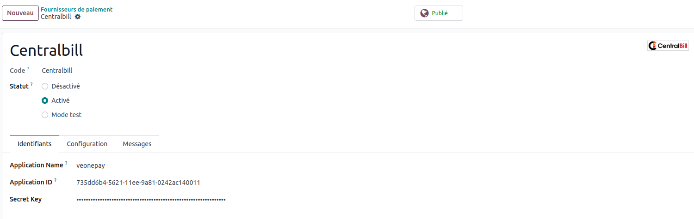

Payment Provider: Centralbill
Welcome to the Payment Provider: Centralbill module description page. This module enhances your e-commerce
platform
by integrating secure payment processing services, ensuring seamless transactions for your customers.

-
Customers can securely make payments using various methods supported by Centralbill, ensuring flexibility
and convenience.
-
Integrated dashboard allows merchants to track transaction history, manage refunds, and analyze payment data
for better business insights.
-
Enable multi-payment collection to offer customers flexible and secure purchasing options across various
payment methods, enhancing integration with your product.
-
Multi-store and multi-application functionality for seamless operation across different business setups.
-
Interoperability through open APIs for enhanced integration capabilities with third-party systems.
-
Secure remote payment link sending for smoother remote transactions. Facilitate secure remote payment for
seamless tele-sales by sending a unique link generated by CentralBill via SMS, WhatsApp, email, or social
media. Your client can then click on the link and enter their payment details.
-
Autonomous payment counter for improved transaction processing efficiency.
Key Features:
Installation :
To install the Payment Provider: Centralbill module, follow these steps:
- Download the module file from the Centralbill website.
- Upload the module to your e-commerce platform's plugin directory.
- Configure the plugin settings to integrate Centralbill with your payment processing workflow.
Technical Support :
For any assistance or inquiries, please contact our technical support team at
support@centralbill.com or visit our website Centralbill.